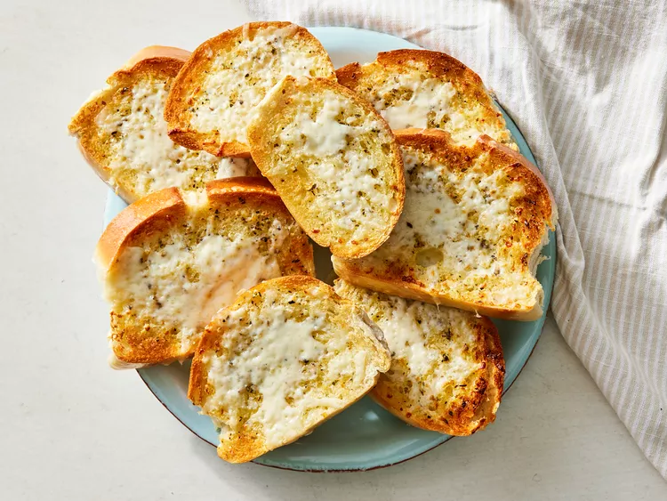

Toasted Garlic Bread

Home page
How to make Toasted Garlic Bread
This garlic toast recipe is quick to make and scrumptious to eat!
It will complement any Italian meal. Melted mozzarella is optional but delicious.
Ingredients
- 1 (1 pound) loaf Italian bread
- 5 tablespoons butter, softened
- 3 cloves garlic, crushed
- 2 teaspoons extra virgin olive oil
- 1 teaspoon dried oregano
- salt and pepper to taste
- 1 cup shredded mozzarella cheese